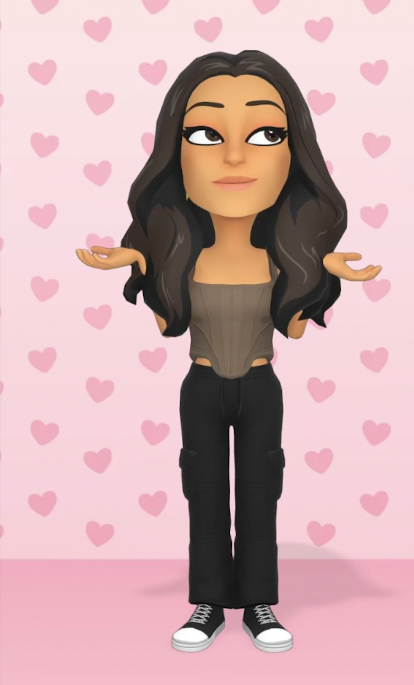
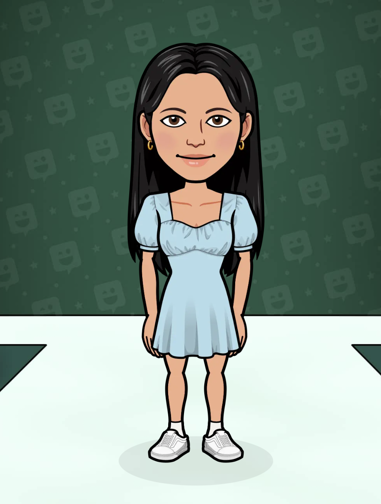

Hi there! When my team and I were deciding what our entre product was going to be, we realized that I could crochet!
So what is better than a cute little crochet turtle as a gift? Or a toy? Or just something to snuggle with?
That is how one of our entre products were created. Our crochet turtles were made with time and effort.
Each turtle is thought about before it is made. What color will the shell be? what will the size be? What stitch will be used?
These turtles are made with care. 20% of our profits go to save the turtles! Buy one for your self, and for others!
I have been playing cello for almost 5 years now. I love making music. I love making things that make other people happy!

This is Ally
Hi there, this is Ally. Me and Ara made lipgloss! They come in popsicle tubes, and they are really cute! In the process of making our product we delt with
a bunch of hard work and a lot of thinking. It was a little messy, but we had fun making it! We hope you have fun using it! Some things I like to do are soccer, painting, and hanging out with my frieds!
I also like movies and can watch just anything!

This is Alyssa
Hi! I have been learning how to make crochet turtles for our entre project with Sammy helping me. I use a lot of my time to
help my team! I like that my hard work goes to Save The Turtles and it makes people happy! I like to do karate! I am a black belt
and I have been doing it for a long time.
This is Ara
Hey, i'm Ara and I'm so glad you stopped by our website, as Ally said we both contributed by making lip gloss wich was so much fun and
as repeated was petty messy. One of my actvities I do after school is gymnastics and I also love the rain and I hope you love our super cute watermelon popsicle lip gloss!